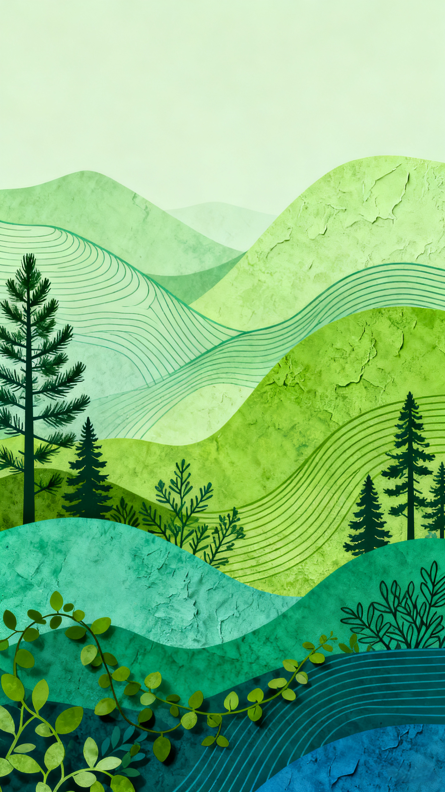

What is Green Eye?
Green Eye is a visual platform that generates a personalized report for the organic food you support. It highlights reductions in chemical use, carbon emissions, water consumption, and soil protection associated with choosing organic food. While individual contributions may seem small, Greeneye accumulate all users's contributions to showcase the meaningful impact we create together.
Developed byGlobal Challenge II Section 3 Group 1